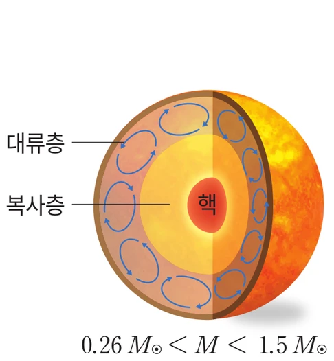
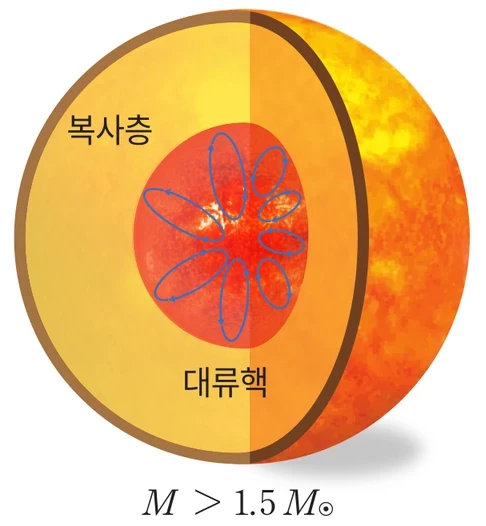
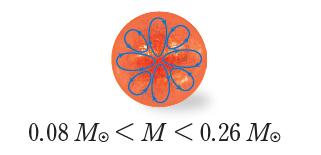

하연샘 지구과학 실험실고등학교 · 지구과학 · 별과 우주
별의 표면 온도와 광도를 한 그래프에 나타내면 별들이 몇 개의 무리로 나뉜다. 직접 H-R도를 그려 별을 분류해 보자.
위의 번호를 누르거나 좌우로 넘기며 차례대로 학습해 보자.
태양으로부터 가까운 거리에 있는 별의 분광형과 절대 등급을 이용하여 H-R도를 그리고, 별을 물리적 특성에 따라 분류해 보자.
모눈종이 (가로축: 분광형, 세로축: 절대 등급)
알아 두기
그래서 H-R도의 가로축(분광형)은 표면 온도를, 세로축(절대 등급)은 광도를 나타낸다.
표는 별의 분광형과 절대 등급을 나타낸 것이다. 별을 누르면 가로축을 분광형, 세로축을 절대 등급으로 하여 모눈종이에 그 별의 위치가 표시된다.
세로축은 위로 갈수록 등급의 숫자가 작아진다(−10이 맨 위). 위쪽일수록 밝은 별이다.
그래프에서 별들의 위치에 따라 몇 개의 집단으로 분류해 각각 다른 색으로 영역을 표시한다. 색을 고른 뒤 모눈종이의 점을 누르거나 문지르면 색이 칠해진다. 같은 색을 한 번 더 누르면 칠하기가 꺼진다.
과정 2에서 '분류 확인'을 통과하면, 내가 붙인 집단 번호에 맞춰 1번과 3번 문제가 열린다.
1. 각 집단의 물리적 특성을 정리해 보자.
분류를 마치면 표가 나타난다.
2. 각 집단에 속한 별의 크기를 비교해 보자.
광도는 L = 4πR²·σT⁴ 이다. 표면 온도가 같은 두 별은 광도를 비교하면 크기를 비교할 수 있다.
3. 태양의 분광형은 G2, 절대 등급은 4.8이다. 태양은 어느 집단에 속할까?
분류를 마치면 문제가 열린다.
별의 집단은 H-R도에 나타나는 분포를 기준으로 주계열성, 거성, 초거성, 백색왜성의 네 종류로 분류할 수 있다.
별을 누르면 정보가 나온다. 별의 색은 표면 온도에 따른 색, 별의 크기는 반지름의 크기를 나타낸다. 점선은 반지름이 같은 별들을 이은 선이다.
별의 집단은 H-R도에 나타나는 별의 분포를 기준으로 크게 주계열성, 거성, 초거성, 백색왜성의 네 종류로 분류할 수 있다. 왼쪽 H-R도 위의 버튼을 누르면 그 집단의 설명이 나온다.
주계열성
별의 약 %는 왼쪽 위에서 오른쪽 아래로 이어지는 좁은 띠 안에 분포하는데, 이 영역의 별을 (이)라고 한다.
주계열성은 H-R도에서 왼쪽 위에 있을수록 표면 온도가 밝은 별로, 반지름과 질량도 .
거성
주계열성인 태양의 오른쪽 위에 위치하는 반지름이 큰 집단을 (이)라고 한다.
거성은 주계열성보다 반지름이 평균 밀도는 .
초거성
거성보다 더 위쪽에 위치하며 광도와 반지름이 더 큰 집단을 (이)라고 한다.
초거성은 주계열성보다 반지름이 평균 밀도는 .
백색왜성
주계열의 왼쪽 아래에 분포하는 별의 집단을 (이)라고 한다.
백색왜성은 반지름이 태양보다 훨씬 질량은 태양과 밀도가 매우 별이다.
미지의 별 확인하기
맞힌 문제 0 / 0절대 등급이 5 작으면 광도는 100배이다. 표면 온도(분광형)가 같으면 L ∝ R² 이다.
| 집단 | H-R도 위치 | 표면 온도 | 반지름 | 평균 밀도 |
|---|---|---|---|---|
| 주계열성 | 왼쪽 위~오른쪽 아래 띠 | 다양 | 왼쪽 위일수록 큼 | 중간 |
| 거성 | 태양의 오른쪽 위 | 낮음 | 큼 | 작음 |
| 초거성 | 거성보다 위 | 다양 | 매우 큼 | 매우 작음 |
| 백색왜성 | 주계열의 왼쪽 아래 | 높음 | 매우 작음 | 매우 큼 |
H-R도와 별의 분류 연습 문제 (8문제)
H-R도상의 별들은 고정되어 있지 않고 진화함에 따라 위치가 변한다. 별은 어디에서, 어떻게 태어날까?
성운에서 주계열성까지 (막대를 움직이거나 단계를 눌러 보자)
밀도가 온도가 성운(예: 암흑 성운)은 주로 분자 상태의 수소로 이루어져 있는데, 성운 근처에서 초신성 폭발 등이 일어나 성운이 수축하면 별이 탄생한다.
성운이 수축하면서 밀도가 커지고, 성운의 회전에 의해 기체 원반이 형성된다. 이때 물질이 중력에 의해 성운의 중심으로 충분히 모이면 원시별이 생성된다.
확인 퀴즈
원시별의 주요 에너지원은?
원시별이 중력에 의해 수축할 때 위치 에너지가 감소하고, 감소한 에너지 중 일부가 내부의 온도를 높인다.
온도가 높은 성운은 기체를 밖으로 밀어내는 기체의 압력 차에 의한 힘이 중력보다 크다. 따라서 기체가 중심으로 모이지 않으므로 별이 형성되기 어렵다.
원시별은 중력에 의해 계속 수축하면서 중심부의 온도가 상승한다. 중심부의 온도가 에 도달하면 중심부에서 수소 핵융합 반응이 일어나는 주계열성이 된다.
수소 핵융합 반응
확인 퀴즈
원시별이 주계열성이 될 때까지 별의 크기는 어떻게 변할까?
태양 질량의 원시별은 처음에 태양 반지름의 수십 배 크기였다가 약 1배까지 줄어든다. H-R도에서 원시별이 아래로 내려오며 광도가 줄어드는 것도 이렇게 크기가 줄기 때문이다.
질량에 따른 원시별의 진화 경로
원시별의 진화 경로는 질량에 따라 다르게 나타난다. 왼쪽 질량 버튼을 눌러 원시별이 주계열에 도착하는 경로와 걸리는 시간을 비교해 보자.
질량에 따른 원시별의 진화 경로
질량이 큰 별
질량이 작은 별
주계열성이 되지 못하는 경우
질량이 태양의 약 0.08배 이하인 원시별은 중력 수축해도 중심부의 온도가 1000만 K에 이르지 못해 수소 핵융합 반응이 일어나지 않으므로 주계열성이 되지 못한다.
별은 일생의 대부분을 주계열 단계에서 보낸다. 관측되는 별의 약 80~90%는 주계열성이다.
시간에 따른 별 내부의 구성 원소 비율 (질량이 태양과 비슷한 주계열성)
| 수소 원자핵 4개의 질량 | 4 × 1.6726 × 10⁻²⁷ kg = 6.6904 × 10⁻²⁷ kg |
|---|---|
| 헬륨 원자핵 1개의 질량 | 6.6447 × 10⁻²⁷ kg |
| 감소한 질량 (Δm) | 약 0.7% → 에너지로 전환 (E = Δmc²) |
얼마나 큰 에너지일까?
휘발유 1 kg을 태우면 약 4.6 × 10⁷ J, 한 가정이 1년 동안 쓰는 전기는 약 1.3 × 10¹⁰ J(월 300 kWh 기준), 전 세계가 1년 동안 쓰는 에너지는 약 6 × 10²⁰ J로 어림하였다.
① 수소 핵융합 반응의 종류
양성자 양성자 연쇄반응(p-p 반응)
탄소·질소·산소 순환 반응(CNO 순환 반응)
② 질량에 따른 주계열성의 내부 구조
주계열성은 질량에 따라 에너지가 생성되고 전달되는 방식이 다르게 나타나므로 내부 구조가 달라진다.

| 질량이 태양 정도인 별 | 질량이 태양의 약 1.5배 이상인 별 |
|---|---|
| 핵 - 복사층 - 대류층 중심핵에서 생성한 에너지를 복사층에서 복사로 전달하고, 이를 대류층이 둘러싸고 있다. |
대류핵 - 복사층 중심부로부터의 거리에 따른 온도 차가 커 대류가 일어나는 핵이 형성된다. |
질량에 따른 주계열성의 내부 구조와 에너지 전달
(M: 별의 질량, M☉: 태양 질량)


질량이 태양의 0.08배~0.26배인 별은 주계열 단계에서 내부 전체가 대류층이므로 모든 수소가 핵융합 반응을 하고 있다.
중심부 온도에 따른 p-p 반응과 CNO 순환 반응의 상대적 에너지 생성량
주계열성의 내부 구조
주계열 단계에 머무는 시간 비교 (로그 눈금)
그래프로 수소 핵융합 반응 비교하기
왼쪽에서 별의 질량을 바꾸거나 '그래프에서 보기'를 눌러 확인해 보자.
3 M☉인 별은 CNO 순환 반응이 우세하지만, 중심부 온도가 가장 높아 p-p 반응으로 생성하는 에너지양도 가장 많다. '우세하다'는 두 반응 중 어느 쪽이 더 많은지를 비교한 것이다.
주계열성은 질량이 클수록 중심부의 온도가 높아 수소를 빠르게 소진하므로 주계열 단계에 머무르는 시간이 짧다.
미지의 별 확인하기
맞힌 문제 0 / 0주계열성은 중심부의 수소가 고갈되면 주계열 단계를 벗어난다. 주계열 이후의 별의 진화 과정은 별의 질량에 따라 달라진다.
주계열 이후 별의 질량에 따른 진화 경로
질량에 따른 주계열 이후의 진화 경로
질량이 큰 별
질량이 작은 별
질량에 따른 별의 진화 과정
별의 물질 순환
성간 물질
행성상 성운 또는 초신성 폭발 과정에서 별이 가지고 있던 원소들을 우주에 공급한다. 초기 우주에는 수소와 헬륨만 있었지만, 별의 진화 과정을 거치면서 우주에 새로운 원소들이 공급되었다. 이 원소들이 성간 물질에 포함되고 다시 새로운 별의 재료가 되었다. 이 과정이 반복되면서 태양계가 만들어졌으며, 우리가 살고 있는 지구는 다양한 원소들로 이루어지게 되었다.
[심화]
별의 탄생과 진화가 반복될수록 우주를 구성하는 수소와 다른 원소의 비율은 어떻게 변화할지 서술하고, 그 까닭을 서술하시오.
모범 답안
수소의 비율은 감소하고, 다른 원소의 비율은 증가할 것이다. 수소는 더 이상 새로 생성되지 않고, 별이 탄생하고 진화하면서 수소는 소진되고 무거운 원소들이 계속 생성되기 때문이다.
별의 진화 연습 문제 (8문제)
별은 질량에 따라 일생이 달라진다. 원시별부터 최후까지 질량별로 정리해 보자.
H-R도에서의 위치
| 단계 | 항목 | 질량이 태양 정도인 별 | 질량이 태양보다 매우 큰 별 |
|---|---|---|---|
| 전주계열 | 주계열 도달 | 느리다 (약 5000만 년) | 빠르다 (약 6만 년) |
| H-R도 이동 | 상대적으로 수직 방향 | 상대적으로 수평 방향 | |
| 주계열 | 수소 핵융합 | p-p 반응 우세 (중심부 약 1800만 K 이하) | CNO 순환 반응 우세 (중심부 약 1800만 K 이상) |
| 내부 구조 | 핵 - 복사층 - 대류층 | 대류핵 - 복사층 | |
| 머무는 시간 | 길다 (약 100억 년) | 짧다 (약 1000만 년) | |
| H-R도 위치 | 주계열의 가운데 | 주계열의 왼쪽 위 | |
| 주계열 이후 | 되는 별 | 거성 | 초거성 (거성보다 훨씬 크고 밝다) |
| H-R도 이동 | 오른쪽 위 (광도가 크게 증가) | 오른쪽 (광도는 거의 일정) | |
| 중심부 핵융합 | 헬륨 핵융합까지 → 탄소·산소 핵 | 연쇄적인 핵융합 → 최종적으로 철 핵 | |
| 최후 | 질량 방출 | 행성상 성운 (서서히) | 초신성 폭발 (급격히) |
| 남는 천체 | 백색왜성 (중심핵 질량 약 1.4 M☉ 미만) | 중성자별 (약 1.4~3 M☉) 또는 블랙홀 (약 3 M☉ 이상) | |
| 만들어 낸 원소 | 헬륨, 탄소, 산소 | 철까지의 원소 + 철보다 무거운 원소 |
하연샘 지구과학 실험실로 돌아가기
2쪽 H-R도의 '별 분포' 점들은 분포를 보여 주기 위해 만든 예시이며, 반지름은 절대 등급과 분광형으로 어림한 값이다.